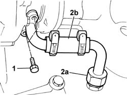
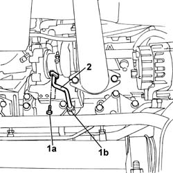

1084B42 ENGINE OIL RETURN PIPE FROM TURBO - R + R
- Path
- Procedures > 10 ENGINE UNIT > 1084 ENGINE LUBRICATION SYSTEM > 1084B ENGINE OIL LUBRICATION CIRCUIT > 1084B42 ENGINE OIL RETURN PIPE FROM TURBO - R + R
- Kind
- repair procedure (removal / refitting; the operation number is the code)
- Applies to
- engines: 2.3 JTD 16V, 2.8 JTD 8V; all production periods
- Interactive page
- https://sloeber94.github.io/elrnDB-fDct/en/#/244000932
Applies to: engines: 2.3 JTD 16V; all production periods
 Removing
Removing
 Refitting
RefittingOp. 7055B54 UNDER-ENGINE GUARD - R R
1. Undo the bolts securing the pipe from the turbocharger.
2. Undo connector (2a) to the crankcase and remove the engine oil return pipe (2b) from the turbocharger.

Applies to: engines: 2.3 JTD 16V; all production periods
Refitting
Removing- Fit the engine oil return pipe from the turbocharger and tighten the connector on the crankcase to torque.
 | Value - daNm | Fastening | Component | Ø |
|---|---|---|---|---|
. | 1.7 | Connector | OIL RETURN PIPE FROM TURBO | 3/8"X1.34 |
- Tighten the bolts securing the pipe from the turbocharger.
Applies to: engines: 2.8 JTD 8V; all production periods
Removing
RefittingOp. 7055B54 UNDER-ENGINE GUARD - R R
1. Undo the fixing bolts (1a) and open the retaining band (1b).
2. Remove the engine oil return pipe from the turbo.

Applies to: engines: 2.8 JTD 8V; all production periods
Refitting
Removing- Fit the pipe in position and tighten the fixing bolts and close the retaining band.